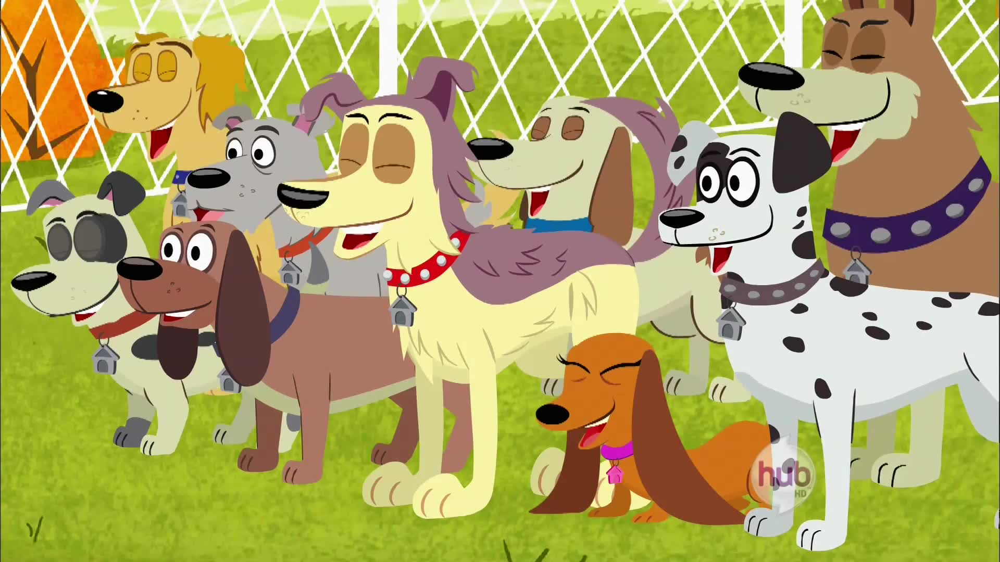

this was aired on a cable channel called the hub channel it was the same channel that my little pony and dan vs. aried on along with a lot of other odd ball shows that didint really fit in with other cable channel's I remeber I watched this show more then anything else that was on air I had a plushie that looked exactly like the mutt dog "lucky" it kinda looked like this it was the same brand but it looked slightly different then this it looked just like the dog in the show and I wonder if that made me want to watch it when I was really young I still remeber the theme song from this show sometimes ill remeber it and be taken aback by it bc of how long ago I would have last heard it I only learned recently that it became the discovery kids channel in 2014 that was so so long ago it's really crazy to hold onto memories like that and not more significant things around that time I would have met my grandmas brother for the last and only time before he passed and I just dont remeber that I dont remeber living in south carolina I dont remeber my parents old cat that they had before cookie but some how I remeber this show that I first watched when I was 4 years old and I somhow randomly remeber the theme song at random times of the day insted of these more significant things it's strange how memory works like that I think I might rewatch this show soon